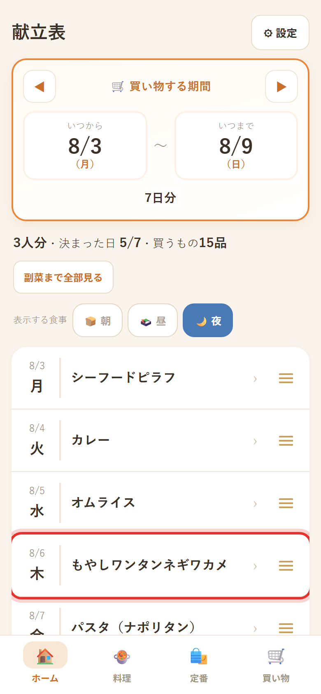
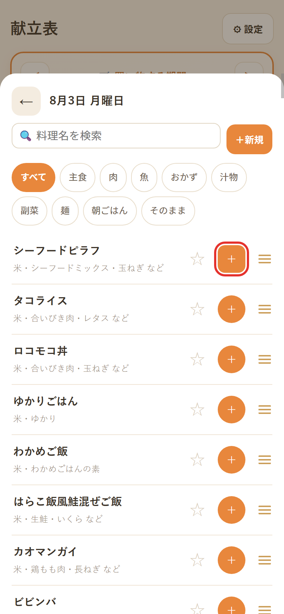
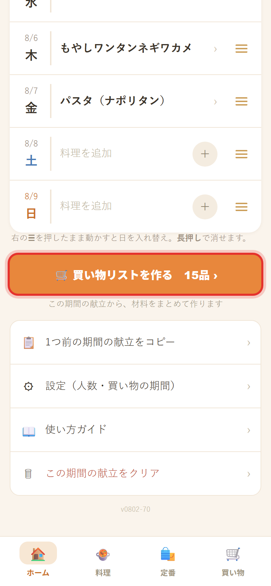
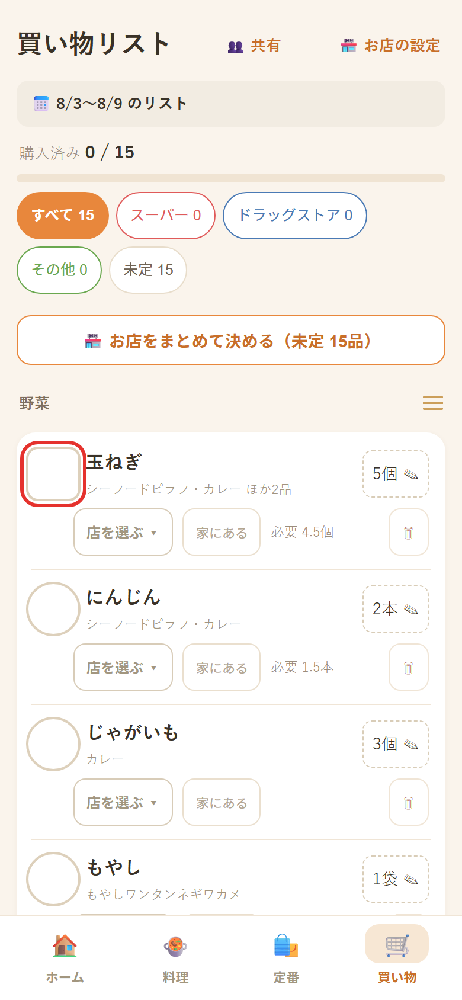
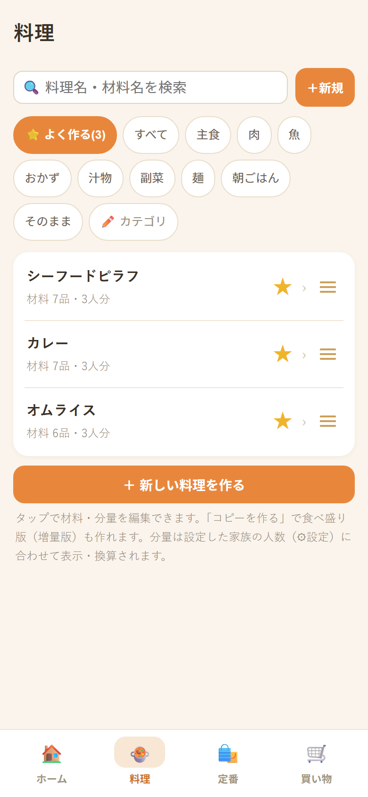
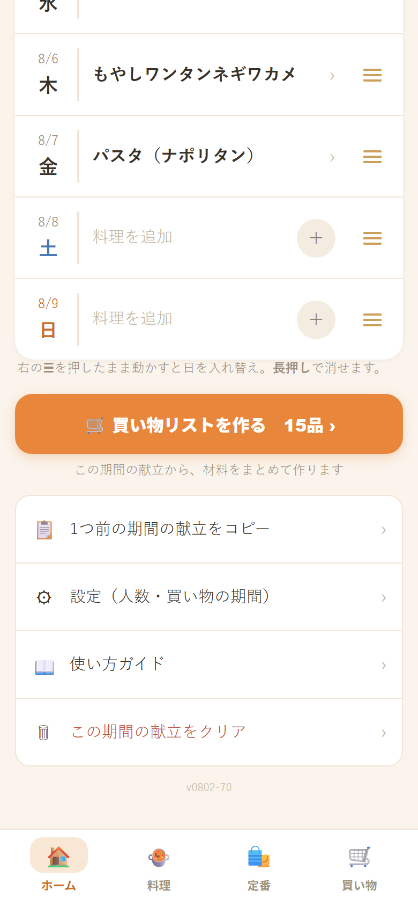
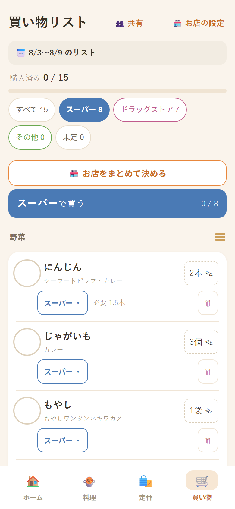
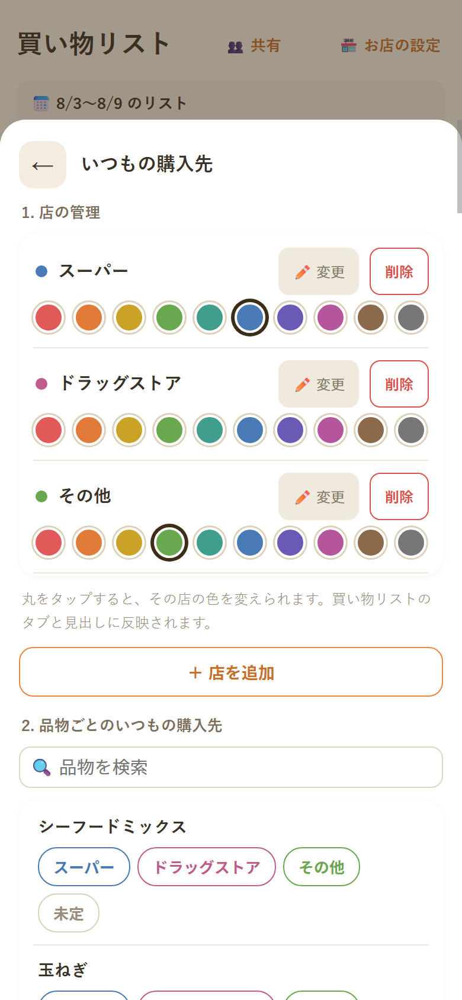
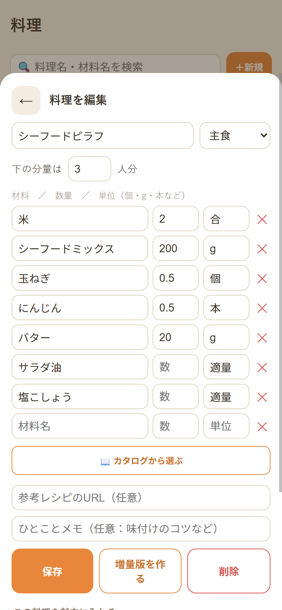

曜日を選んで、食べたい料理をタップするだけ。必要な材料が自動で合算されて、買う数まで出ます。「あれ何個いるんだっけ」がなくなります。
※ ブラウザで開くだけ。インストールも会員登録もいりません。

むずかしい設定はありません。1週間ぶん決めなくても大丈夫。まずは明日の1日だけでどうぞ。
最初の画面が1週間の献立表です。決まっている日だけ入れれば大丈夫。空の日があっても問題ありません。

227品から選べます。上の検索や、カテゴリ（主食・肉・魚…）でしぼり込めます。1日に何品でも入れられます。

選んだ料理の材料が、ぜんぶ足し算されて1つのリストになります。玉ねぎを3つの料理で使うなら、ちゃんと合計で出ます。

買った物にチェックが付いて、上のバーが伸びます。残り何品かがひと目で分かります。
基本の4つだけでも使えます。でもこの4つを覚えると、毎週の献立決めと買い物が別モノになります。効果の大きい順です。

227品から毎回探すのが、いちばん時間を使います。いつも作る料理に★を付けておけば、次からはワンタップでその中だけを表示できます。

毎週ゼロから決める必要はありません。ホーム画面をいちばん下まで送ると「📋 先週の献立をコピー」があります。押すと先週の1週間がそのまま入るので、変えたい日だけ直せば完成です。

行く店が2つ以上あるときに効きます。品物ごとに店を決めておくと、その店にいる間はその店の物だけを表示できます。
買い物リスト右上の「🏪 お店の設定」で、店ごとに色を選べます。色はタブ・店名の帯・品物の店ボタンに反映されるので、ひと目でどこで買う物か分かります。


入っている227品はたたき台です。「うちのカレーはこうじゃない」で正解なので、遠慮なく直してください。直した内容はこの端末に保存され、次からずっとその分量で計算されます。
困ったときに思い出してください。
日付をタップして右上の「🗑 この日を空に」。朝・昼・夜まとめて消せます。ホームで日付を長押しでも同じ。1品だけなら料理側を長押し。
編集画面の「増量版を作る」でコピーができます（名前に「食べ盛り」が付きます）。元の料理は残るので、日によって使い分けられます。
「🍲 料理」タブ右上の「＋新規」から1から作れます。料理名・カテゴリ・材料を入れて保存するだけ。作った料理にも★を付けられます。
「🛍️ 定番」タブに牛乳・パン・日用品などを登録。個数も指定でき、⭐を付けると毎回自動でリストに入ります。
買い物リストの下に「調味料・常備品」欄があります。切れている物をタップすると、その分だけリストに入ります。
ホームの「表示する食事」で朝・昼をONにすると1日が3段になり、朝食やお弁当も管理できます。OFFにしても中身は消えません。
☰を掴んで動かせます。料理の一覧、その日の献立、買い物の売り場グループ、定番——どれも使いやすい順に並べ替えられます。
「⚙設定 → バックアップ保存」でファイルを保存し、新しい端末で「読み込み」。そのまま引き継げます。
無料・広告なしです。登録もログインも必要ありません。リンクを開けばすぐ使えます。
お使いの端末の中だけに保存されます。献立や買い物の内容がインターネット上に送られることはありません。
置けます。iPhoneは共有ボタン →「ホーム画面に追加」、Androidは右上の「⋮」→「ホーム画面に追加」。普通のアプリのように開けます。
使えます。一度開いたことがあれば、電波がなくてもリストの表示とチェックができます。
大丈夫です。チェックした物・選んでいたお店のタブ・売り場の並び順は、すべて保存されています。次に開いたときは続きから使えます。
料理を選ぶ画面の「−」で1つずつ減らせます。その日を丸ごと消すなら、日付をタップして右上の「🗑 この日を空に」。ホームで日付を長押ししても同じです。
大丈夫です。むしろ変えて使うものだと思ってください。「🍲 料理」タブで料理をタップ → 材料・数量・単位を書き換えて「保存」。この端末の中だけで直るので、元に戻したくなったら⚙設定の「すべて初期化」で最初の状態に戻せます（ただし作った料理も消えます）。
共有されません。端末ごとに別々です。移したいときは「⚙設定 → バックアップ保存」でファイルを保存し、移動先で「読み込み」してください。
消えます。事前に「⚙設定 → バックアップ保存」でファイルを保存し、新しい端末で読み込んでください。
ホーム画面をいちばん下まで送ると「🔄 アプリを最新に更新する」があります。押しても献立や買い物のデータは消えません。